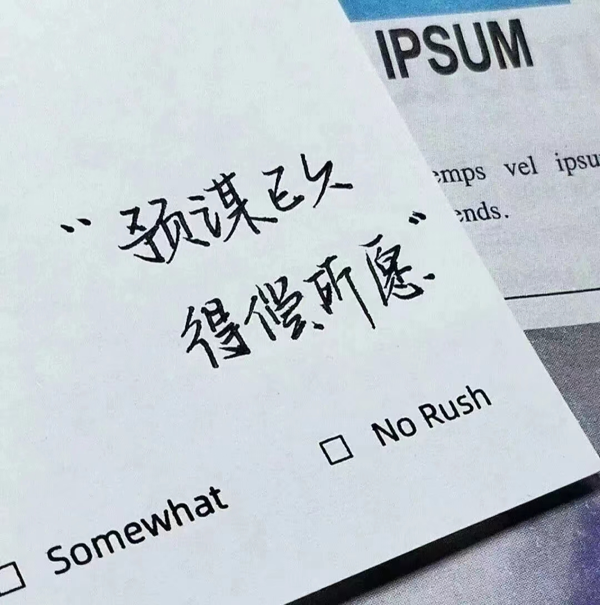
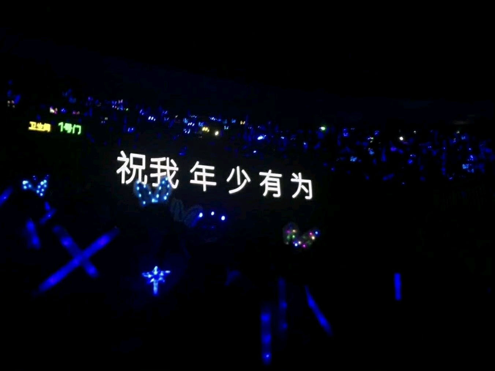
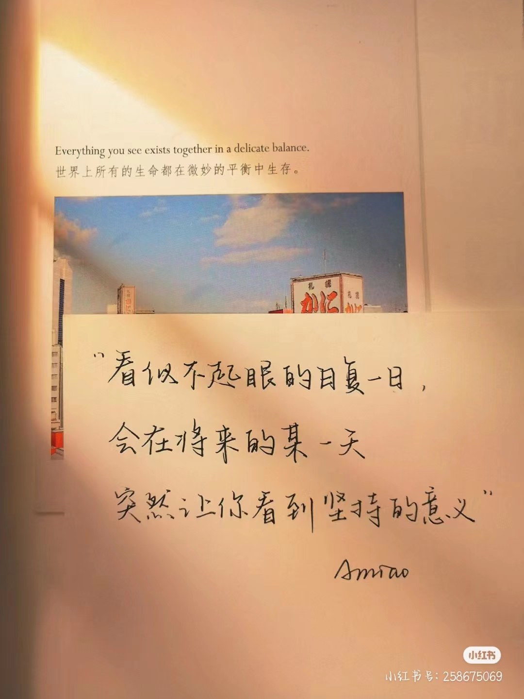
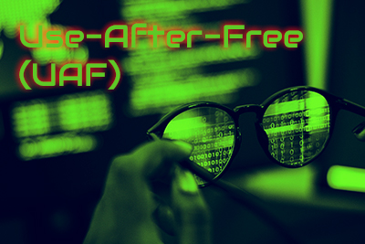
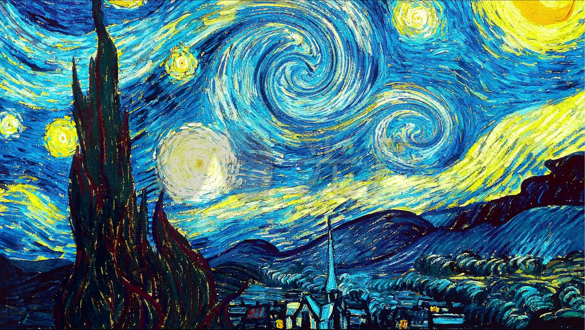
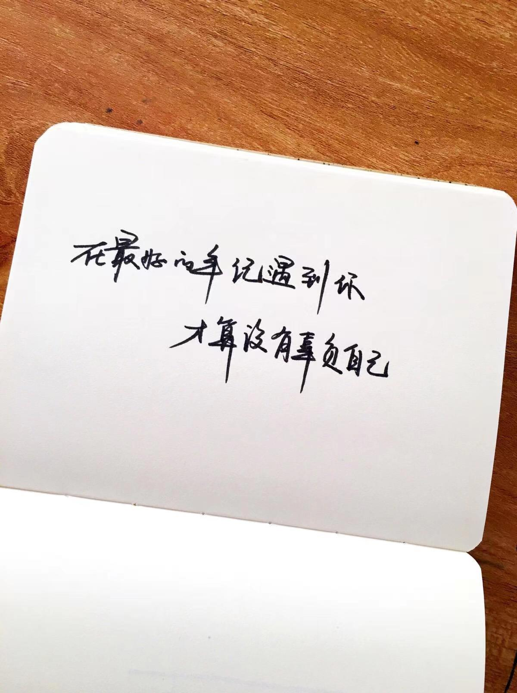
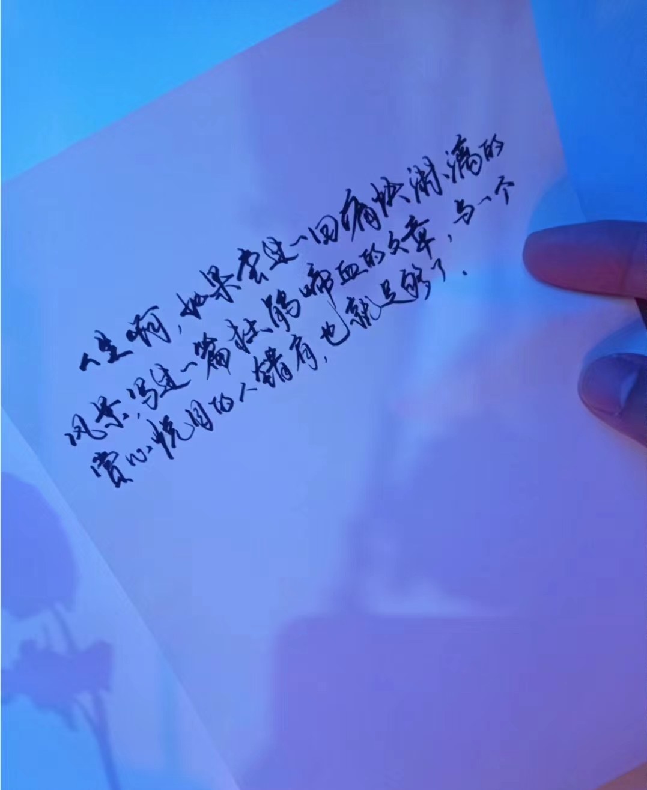

2023年 12月
12月 1日
如果放弃真的那么简单，谁会选择纠缠？
道理谁都懂，但真正喜欢过的人
怎么能那么容易地放弃
|
12月 2日
并不可否认，生活磨掉了我们一部分的勇气和温柔，
但我也相信，因为我们还年轻，
所以失去的还会长出来，而新的部分将会闪闪发光。
|

12月 3日
12月 4日
头等舱可以优先登机，银行VIP可以不用排队，演唱会最贵的位置票也最好
世界从来就不平等，你有多努力就有多特殊
|

12月 5日
也许，这世界真的没有所谓的屠龙之术，
传说中的少年有的只是一把锈迹斑斑的铁剑，
但在所有人都仓皇出逃时，他有提剑而上的勇气
|
12月 6日
《暗格里的秘密》里有一段台词：
“所以继续往前走吧，不要害怕，所有现在看似不起波澜的日复一日，
终究会在将来的某一天突然让你明白坚持和努力的意义”
|

12月 7日
我在，就是破釜沉舟，是披荆斩棘，
是一诺千金，是虽九死其尤未悔，
是越千山万壑也要与你共一个更美的春天。
——南方周末
|
12月 8日
“就像真诚这张牌，它加任何一张都是王炸，
唯独单出就是死牌”
|
12月 9日
|
网络安全界有个术语叫做pointer use after free，释放后的指针就是野指针，即使是正确的信息写入原本属于它的地方，也是错误和危险的。
|

12月10日
“于千万人之中遇见你所遇见的人，于千万年之中，时间的无涯的荒野里，没有早一步，也没有晚一步，正好赶上了。
人和人之间所有的遇见，看似一场缘分，其实冥冥之中自有定数。有缘的你赶不走，无缘的，你求不来。人生，其实就是一场盛大的相遇。每一次潜意识的转身，每一个不经意的回眸，背后都藏着深深的根机和因缘。
有人陪你一生，在寂寥的深秋里漫步前行，让你余生不再孤单。有人陪你一程，只为在你生命中留下一抹痕迹，然后匆匆离去。
你会遇见谁，都是命中注定。”
———张爱玲
|
12月11日
很荣幸能陪你走过这样一段路，
以后你不管是大红大紫还是泯然众人，我都记得在今年的这个暮冬到初春。
见证过你眼里有光并也认为前路有光的时刻。
祝你，永远一帆风顺，永远是少年。
|
12月12日
每个人心中都有一团火，但路过的人只看到烟。
但是总有一个人，总有那么一个人能看到这团火，
然后走过来，陪我一起。
——梵高
|

12月13日
“越是气场平和、心性温柔的人，越不爱和别人太密切地交往，生怕哪里辜负了对方的期待，同时也绝少期待他人。于是在一般社会看来，反而像是比较冷淡的人。”
“可惜越温柔的人，偏偏越难驯服。”
|
12月14日
“你为什么努力？”
“我想去的地方都很远，想要的东西都很贵，我喜欢的人超完美，
还有，始终坚定选择我的人的鼓励，一直支持着我的人的期望，
以及，天生傲骨”
|

12月15日
“能说服人的，从来都不是道理，而是南墙;
能教人成长的，从来也不是书籍，而是经历。
人总是会以自己最不喜欢的方式成熟着。”
|
12月16日
所有的结局都已写好
所有的泪水也都已启程
却忽然忘了是怎么样的一个开始
在那个古老的不再回来的夏日
——席慕容《青春》
|
12月17日
“紫霞喜欢至尊宝，至尊宝喜欢白晶晶，
白晶晶喜欢齐天大圣，齐天大圣喜欢紫霞，
你以为至尊宝和齐天大圣是一个人，
你却忘了他们相差了五百年，
什么都对，唯独时间不对 ”
——摘自网易云热评《慌》
|

12月18日
有人负重三十载，有人雀入樊笼，有人在黑暗中莹莹踽踽，走了很久很久，
好在世间总有星辰开道，所以荆天棘地，也不枉此行。
|

|